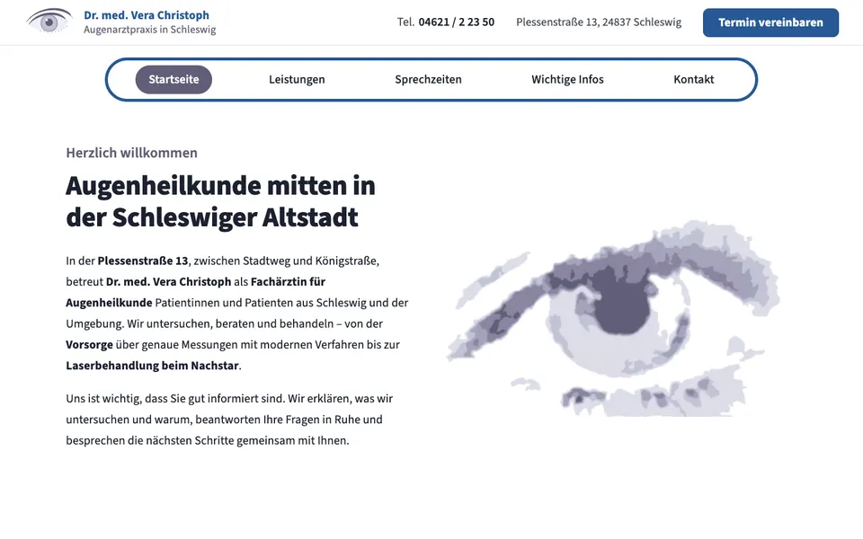
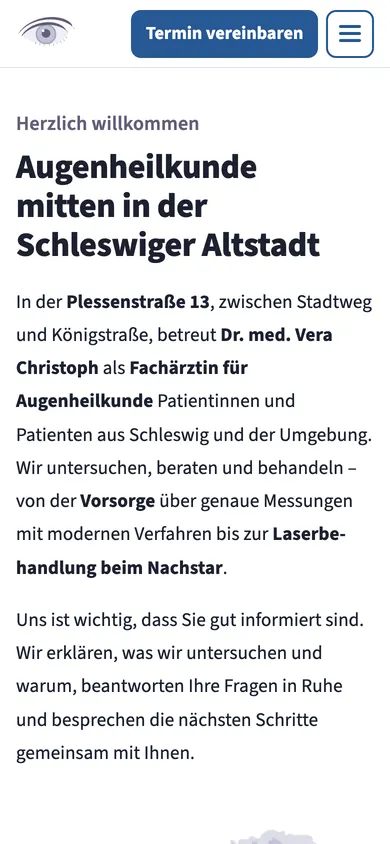
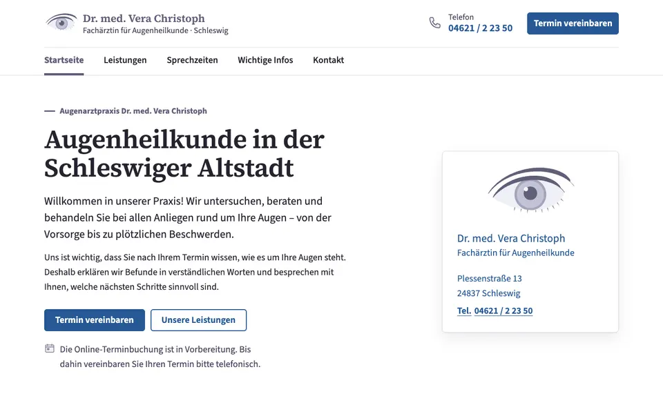
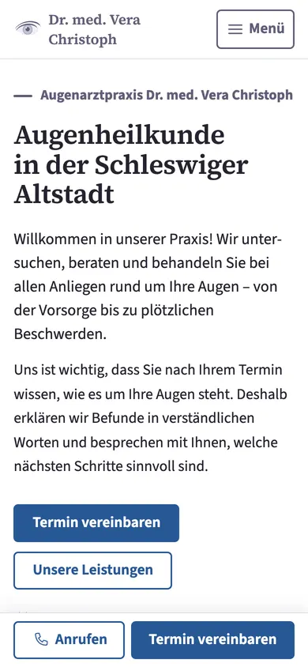
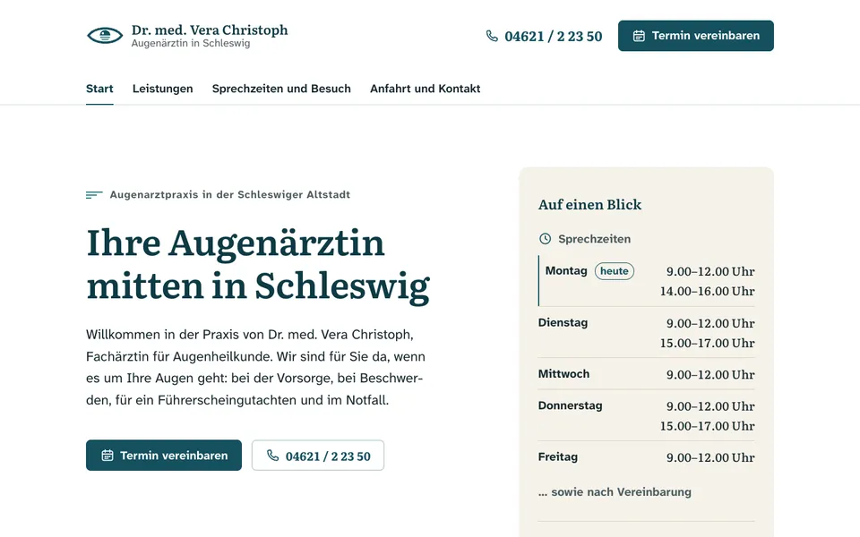
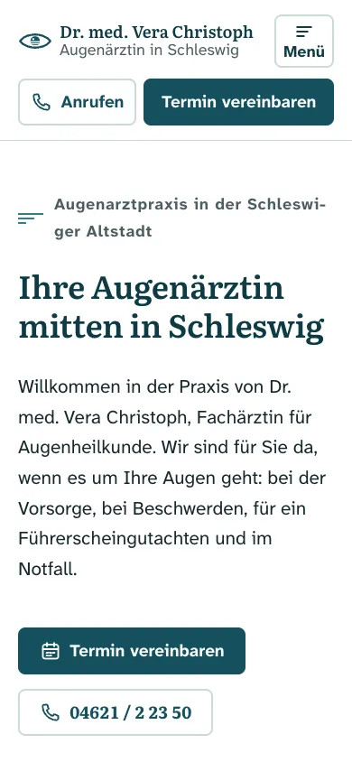

Drei Entwürfe für Ihre neue Website
Liebe Frau Dr. Christoph, hier finden Sie drei vollständige Entwürfe für die Website Ihrer Praxis. Alle drei enthalten dieselben Inhalte: Ihre Sprechzeiten, Ihre Leistungen, Hinweise für Patientinnen und Patienten, die Anfahrt mit den aktuellen Parkmöglichkeiten und die Rechtstexte. Sie unterscheiden sich darin, wie nah sie an der Seite der Augenpraxis Mitte liegen, die Ihnen gefällt.
Klicken Sie sich gern durch alle Seiten, auch auf dem Telefon. Jeder Entwurf lässt sich später in Farben, Texten und Details anpassen.
Gut zu wissen: Angaben in eckigen Klammern, etwa „[E-Mail-Adresse folgt]“, fehlen uns noch von Ihnen. Die Entwürfe erscheinen nicht in Suchmaschinen und gehen erst online, wenn Sie einen ausgewählt und freigegeben haben.
-


Entwurf 1Nah an der Referenz
Aufbau und Anmutung der Augenpraxis Mitte, so nah, dass die Verwandtschaft sofort auffällt – aber mit Ihren Farben, Ihrem Logo und eigenen Texten.
- Schmaler Kopfstreifen mit Telefon und Termin-Schaltfläche, darunter die runde Navigations-„Pille“
- Ihr Aquarell-Auge als Blickfang auf der Startseite
- Blauer Fuß mit Leitsatz, Sprechzeiten und Logo als Wasserzeichen, darüber eine Karte
- Schrift Source Sans 3, passend zu Ihrer Visitenkarte
-


Entwurf 2Eigenständig
Dieselbe ruhige, sachliche Haltung, aber anders gelöst: klare Textnavigation, eine Randspalte mit Kurzinfos und Überschriften mit Serifen.
- Sprechzeiten auf der Startseite als übersichtliche Wochenleiste
- Auf dem Telefon eine feste Leiste „Anrufen · Termin vereinbaren“ am unteren Rand
- Leistungen als Übersicht mit Sprungzielen und gut lesbaren Listen
- Farben aus Ihrem Logo, mit dem dunklen Graublau der Zeichnung als Leitfarbe
-


Entwurf 3Frei gestaltet
Ein ganz eigener Auftritt mit neuem Logo und neuen Farben. Die Idee: Schleswig liegt an der Schlei – das ruhige Wasser gibt Farben, Linien und Bilder vor.
- Neues Logo: ein offenes Auge, dessen Iris wie eine Sonne über dem Wasser steht
- Petrol, Sand und das Backsteinrot der Altstadt
- Weniger Seiten, geordnet nach den Fragen Ihrer Patienten: Leistungen, Ihr Besuch, Anfahrt und Kontakt
- Schrift Atkinson Hyperlegible, entwickelt für Menschen mit Sehschwäche
Was wir vor dem Start noch von Ihnen brauchen
Damit die Website vollständig und rechtssicher online gehen kann, benötigen wir noch diese Angaben. Alles Weitere lässt sich an einer zentralen Stelle einpflegen und erscheint dann auf allen Seiten.
- E-Mail-Adresse der Praxis und – falls vorhanden – Faxnummer
- Zugang zur Praxis: Stockwerk, Aufzug, Stufen, Parkplatz am Haus
- Pflichtangaben fürs Impressum: Staat der Approbation, zuständige Ärztekammer und Aufsichtsbehörde, Berufsordnung, gegebenenfalls Umsatzsteuer-ID, Berufshaftpflichtversicherung
- Für die Datenschutzerklärung: gegebenenfalls Ihre Datenschutzbeauftragte Person sowie der künftige Anbieter von Website und Online-Terminbuchung
- Wer das Aquarell-Auge Ihrer Visitenkarte gezeichnet hat und ob wir es digital nutzen dürfen (betrifft Entwurf 1 und 2)
- Die Adresse der Online-Terminbuchung, sobald sie fertig ist
- Eine kurze Bestätigung der gerätegebundenen Leistungen (OCT, GDx, YAG-Laser, Führerscheingutachten)